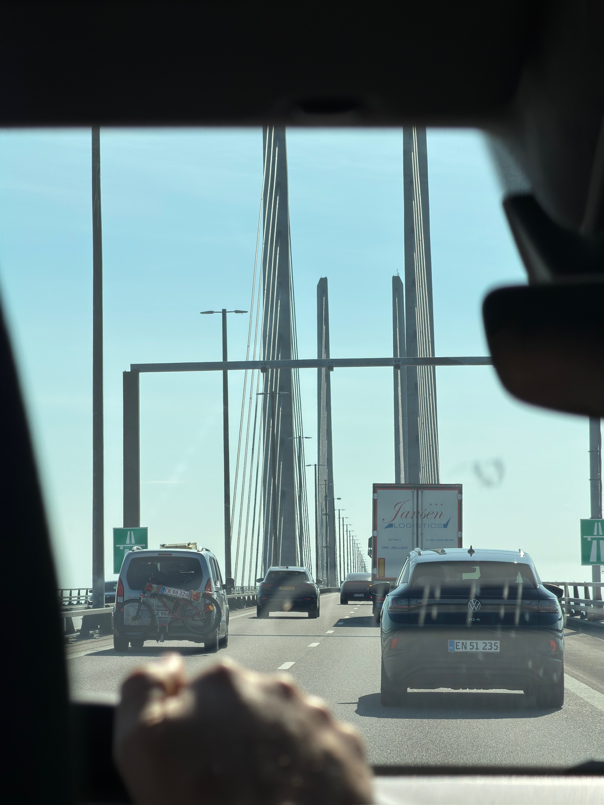
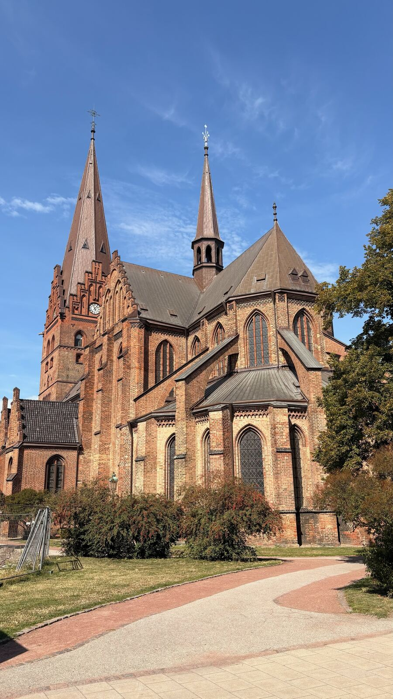
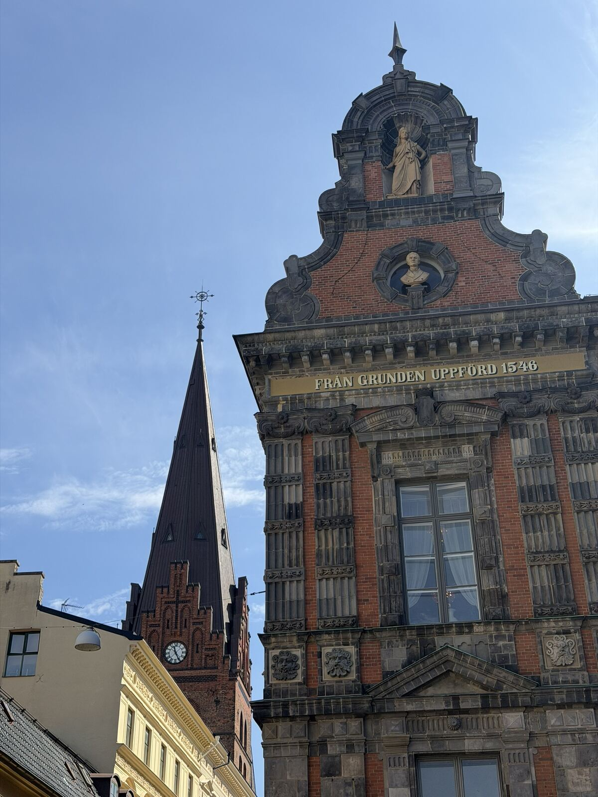
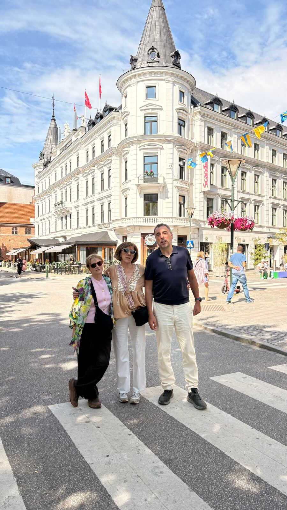
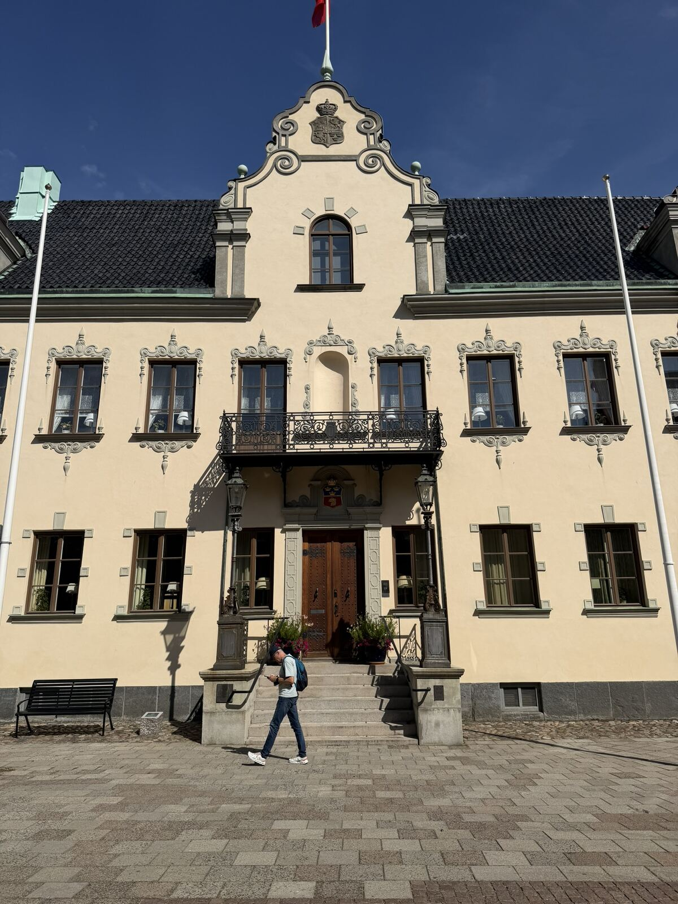
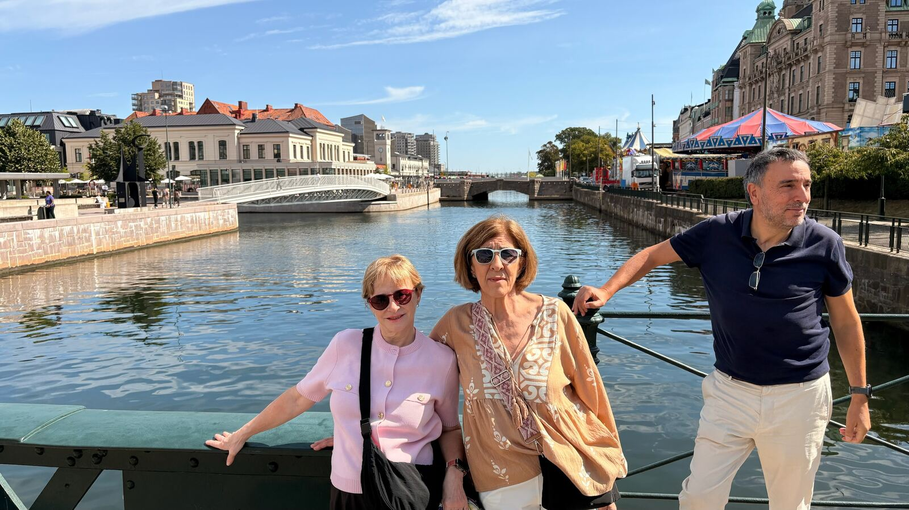
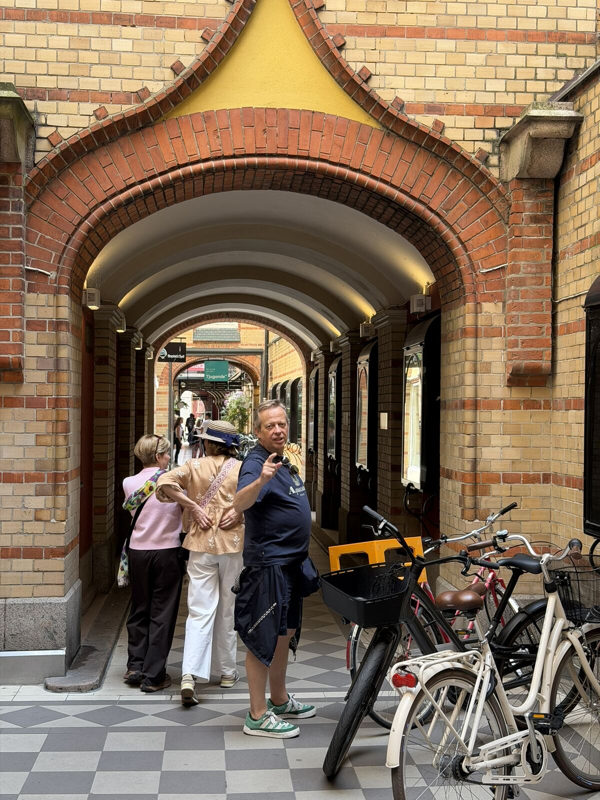
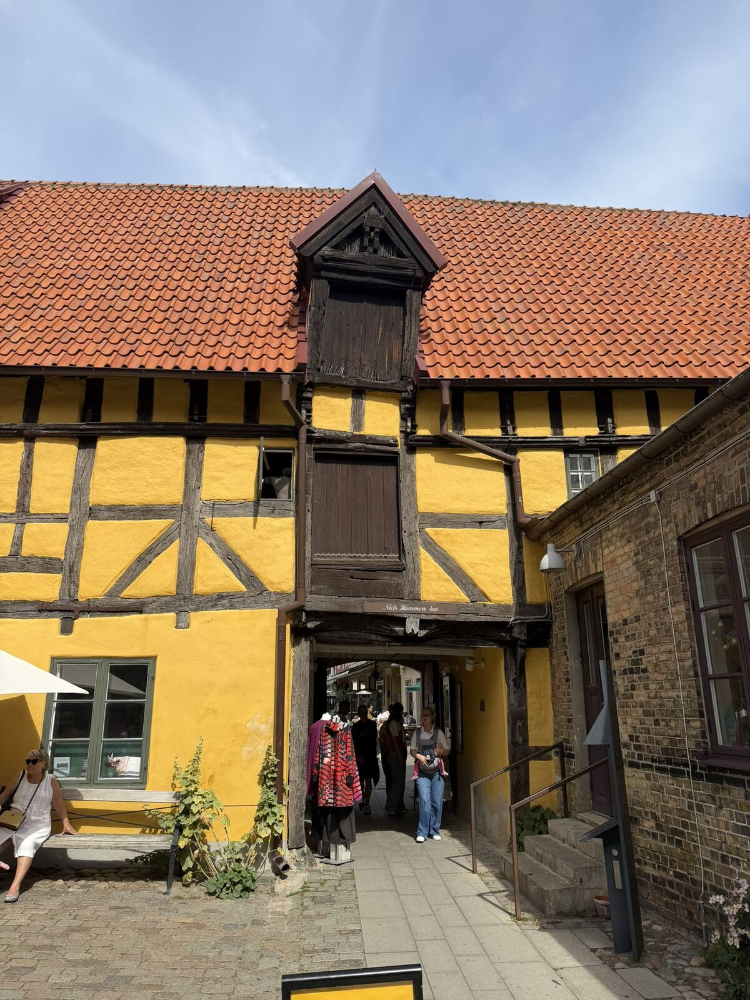
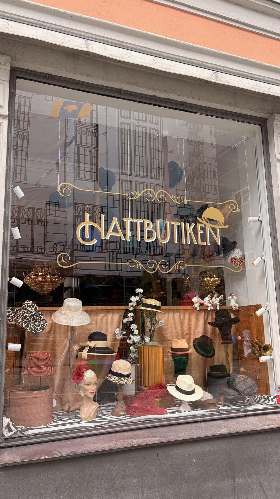
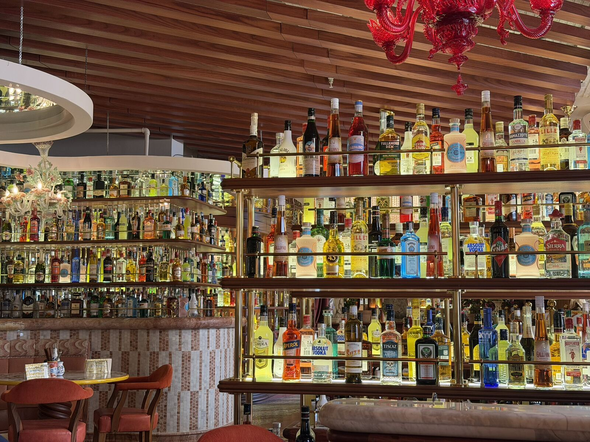

Un dia sencer a Suècia perquè el pont hi era i, ja que havíem pagat el peatge més car d'Europa, perquè podem, calia rendibilitzar-lo. Malmö va resultar ser una ciutat molt digna a la qual vam anar a comprar un barret.

El pont a Malmö és el més car d'Europa. El vam creuar per poder dir que hem estat a Suècia.

L'església de Sant Pere.

Façana de l'ajuntament de Malmö, aixecat el 1546, amb la torre de l'església de Sant Pere al fons.

L'Hotel Kramer, a la plaça Stortorget.

L'ajuntament (Rådhus), també a Stortorget.

Tres dels nostres protagonistes fent veure que porten tota la vida posant així.

Un passatge del centre amb més bicis aparcades que gent.

Niels Hammers hus, una casa d'entramat del segle XVI al nucli antic.

Objectiu del dia complert: comprar un barret i fer petar la xerrada una estona amb la dependenta de la Hattbutiken.

Aquí vam dinar, un restaurant kitsch amb moltes ampolles de colors.